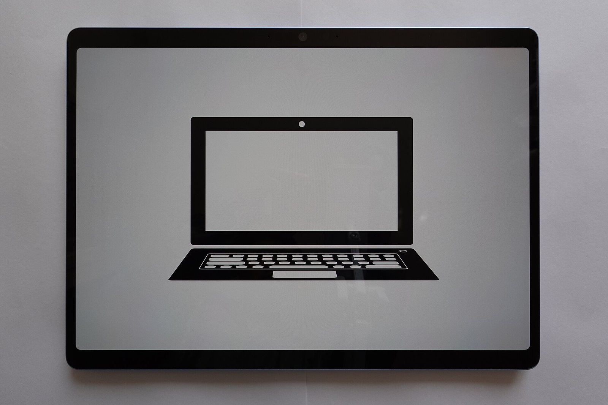

Топ-5 смартфонов до 30 000 рублей в 2026 году
Цена в 30 тысяч — это «золотая середина», где уже есть нормальные камеры, быстрые экраны и батарея на день без розетки. Ниже — пять моделей, которые…
Цена в 30 тысяч — это «золотая середина», где уже есть нормальные камеры, быстрые экраны и батарея на день без розетки. Ниже — пять моделей, которые…

Рабочий ноутбук — это не «чем дороже, тем лучше», а правильный баланс: вес, время работы от батареи и клавиатура. Рассказываю, как не переплатить. Определитесь…

Рынок TWS-наушников огромный, и половина моделей — маркетинг. Вот по каким параметрам реально выбирать. Главное — посадка и кодек Наушники, которые выпадают…

Умный дом не обязательно собирать за один день и за большие деньги. Вот порядок, в котором это имеет смысл делать. Шаг 1. Освещение Начинайте с ламп и…

Умные часы за несколько лет перестали быть игрушкой — теперь это нормальный инструмент для спорта, уведомлений и оплаты. Разбираем, что важно, а что маркетинг.…

Телевизор покупают раз в 5–7 лет, поэтому ошибка в выборе обходится дорого. Рассказываем, какие параметры реально видны глазом, а за какие переплачивать не…

Планшет — ниша между смартфоном и ноутбуком, и в 2026 году у него есть три честных сценария. Если вашего среди них нет — возможно, планшет и не нужен. Когда…

Медленный интернет чаще виноват не провайдер, а старый роутер. Рассказываем, как выбрать маршрутизатор под квартиру и количество устройств. Считаем устройства…